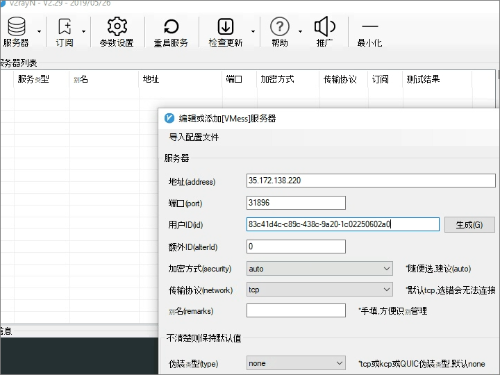

bash <(curl -s -L https://git.io/v2ray.sh)
| 游戏 | 开发国家 | 游戏简介 |
|---|---|---|
| 绝地求生 （PlayerUnknown’s Battlegrounds） |
韩国公司 Bluehole Studio |
逃杀类游戏，最初发布于2017年玩家需要在一片荒岛上收集武器和资源，同时对抗其他玩家，最后生存到最后成为胜利者。 |
| FIFA Online 3 & 4 | 美国公司 Electronic Arts |
足球模拟游戏，玩家可以选择各种国家和俱乐部进行比赛，体验真实的足球比赛感觉。 |
| 黑色沙漠 （Black Desert Online） |
韩国公司 Pearl Abyss |
沙盒式MMORPG游戏，玩家可以选择各种职业，探索广阔的世界，进行各种战斗和交互。 |
| 最终幻想 XIV （Final Fantasy XIV） |
日本公司 Square Enix |
MMORPG游戏，玩家可以选择各种职业，探索一个充满奇幻和神秘感的世界，进行各种战斗和交互。 |
| 使命召唤 （Call of Duty） |
美国公司 Activision |
第一人称射击游戏，玩家可以选取各种武器和角色，进行各种战斗和挑战。 |
| 古墓丽影 （Tomb Raider） |
英国公司 Core Design |
动作冒险游戏，玩家扮演女主角劳拉，进行各种探险和挑战。 |
| 刺客信条 （Assassin’s Creed） |
法国公司 Ubisoft |
动作冒险游戏，玩家扮演刺客，进行各种刺杀和探险。 |
| 神秘海域 （Uncharted） |
美国公司 Naughty Dog |
动作冒险游戏，玩家扮演男主角尼古拉斯，进行各种探险和挑战。 |
| 侠盗猎车手 （Grand Theft Auto） |
美国公司 Rockstar Games |
动作冒险游戏，玩家可以探索广阔的城市环境，进行各种抢劫和挑战。 |
| 猎魔手记 （Monster Hunter） |
日本公司 Capcom |
动作冒险游戏，玩家可以选择各种角色和武器，对抗各种可怕的怪物。 |
| 暗黑破坏神 III （Diablo III） |
美国公司 Blizzard Entertainment |
动作角色扮演游戏，玩家可以选择各种角色和职业，进行各种冒险和挑战。 |
| 无冬之夜 （Neverwinter） |
美国公司 Cryptic Studios |
MMORPG游戏，玩家可以探索一个充满奇幻和神秘感的世界，进行各种战斗和交互。 |
| 战地 （Battlefield） |
瑞典公司 EA Digital Illusions CE |
第一人称射击游戏，玩家可以探索各种战斗场景，进行各种挑战和战斗。 |
| 传奇全球版 （Lineage） |
韩国公司 NCsoft |
2DMMORPG游戏，拥有丰富的角色和职业选择，以及深厚的社交系统。 |
| 魔兽世界 （World of Warcraft） |
美国公司 Blizzard Entertainment |
MMORPG游戏，玩家可以选择各种角色和职业，进行各种冒险和挑战。 |
| 暗黑血统 （The Masquerade) |
美国公司 Troika Games开发 |
是一款角色扮演游戏，玩家可以扮演吸血鬼，探索黑暗和神秘的世界。 |
| 龙之谷 （Dragon Nest） |
韩国公司 Eyedentity Games |
MMORPG游戏，玩家可以选择各种角色和职业，进行各种冒险和挑战。 |
| 迷你世界 （Mini World） |
中国公司 Miniwan Technology |
沙盒式生存游戏，玩家可以自由创造和探索自己的世界。 |
| 孤岛惊魂 （Far Cry） |
法国公司 Ubisoft |
第一人称射击游戏，玩家可以探索各种战斗场景，进行各种挑战和战斗。 |
| 民间传说 （Folklore） |
日本公司 Game Republic |
动作角色扮演游戏，玩家可以扮演各种角色，进行各种冒险和挑战。 |
| 孤岛惊魂 （Far Cry） |
法国公司 Ubisoft |
第一人称射击游戏，玩家可以探索各种战斗场景，进行各种挑战和战斗。 |
| 民间传说 （Folklore） |
日本公司 Game Republic |
动作角色扮演游戏，玩家可以扮演各种角色，进行各种冒险和挑战。 |
DogYun(狗云)专门为国内用户提供云服务，因此线路上有优化，一些机房还有CN2线路，速度上来说还是不错的。DogYun虽然经营的时间不算太久，但是发展速度还是挺快的，可见经营得还是不错的，得到了不少用户的青睐。
| CPU | 内存 | 硬盘 | 流量 | 带宽 | 价钱 | 购买地址 |
| 1个CPU | 1GB | 25GB SSD | 500 GB | 50M带宽 | ￥39/月 | 详情 |
| 1个CPU | 2GB | 30GB SSD | 800 GB | 50M带宽 | ￥49/月 | 详情 |
| 1个CPU | 2GB | 30GB SSD | 300 GB | 50M带宽 | ￥59/月 | 详情 |
| 1个CPU | 2GB | 25GB SSD | 500 GB | 50M带宽 | ￥49/月 | 详情 |
| 1个CPU CLD（特价） | 2GB | 20GB SSD | 500 GB | 50M带宽 | ￥27/月 | 详情 |
| 1个CPU CMI（特价） | 2GB | 20GB SSD | 500 GB | 50M带宽 | ￥33.7/月 | 详情 |
野草云（原野草主机），成立于2012年，隶属于福清凌仟网络服务有限公司。现有的网络节点有“香港直连线路”和“美国洛杉矶Cera机房线路”采用KVM为基础虚拟架构。
| 服务器 | CPU核心 | 内存 | 存储 | 带宽 | 月流量 | 月报价 | |
| 香港VM.1H1R | 1 | 1GB | 20G | 30M | 200GB | 38元/月 | 详情 |
| 香港VM.1H2R | 1 | 2GB | 20G | 30M | 200GB | 60元/月 | 详情 |
| 香港VM.2H4R | 2 | 4GB | 20G | 30M | 200GB | 118元/月 | 详情 |
| 香港VM.4H8R | 4 | 8GB | 20G | 30M | 200GB | 230元/月 | 详情 |
| 香港VM.1H1R | 1 | 1GB | 20G | 3M | 无限制 | 38元/月 | 详情 |
| 香港VM.1H2R | 1 | 2GB | 20G | 3M | 无限制 | 60元/月 | 详情 |
| 香港VM.2H4R | 2 | 4GB | 20G | 3M | 无限制 | 118元/月 | 详情 |
| 香港VM.4H8R | 4 | 8GB | 20G | 3M | 无限制 | 230元/月 | 详情 |
LightNodeLightNode是成立于2002年的香服务商，最低月付 $7.71，按时计费，流量单项计费。充 $10就可以开无限台实例，支持自定义镜像。首冲随机赠送 $5~20。
| CPU | 内存 | 硬盘 | 带宽/流量 | 价格 | 购买 |
| 1核 | 2G | 50G | 100Mbps/1TB | $7.71/月 | 详情 |
| 2核 | 4G | 50G | 100Mbps/2TB | $14.70/月 | 详情 |
| 4核 | 8G | 50G | 100Mbps/2TB | $30.90/月 | 详情 |
| 8核 | 16G | 50G | 100Mbps/2TB | $57.69/月 | 详情 |
| 8核 | 32G | 50G | 100Mbps/2TB | $81.69/月 | 详情 |
| 16核 | 32G | 50G | 100Mbps/2TB | $105.69/月 | 详情 |
DIYVM是一家基于美国硅谷机房的VPS主机商，成立于2012年，提供多种不同尺寸和配置的VPS计划。该公司的服务特点包括良好的网络速度、完善的技术支持、自定义服务等。
| 架构 | CPU | 内存 | 硬盘 | 带宽 | IPv4 | 价格 | 购买 |
| KVM架构 | 2 | 2GB | 50GB | 5Mbps | 1个 | 50元/月 | 详情 |
| KVM架构 | 4 | 4GB | 60GB | 5Mbps | 1个 | 100元/月 | 详情 |
| KVM架构 | 4 | 8GB | 70GB | 10Mbps | 4个 | 200元/月 | 详情 |
| KVM架构 | 8 | 16GB | 80GB | 10Mbps | 6个 | 400元/月 | 详情 |
| KVM架构 | 8 | 32GB | 100GB | 15Mbps | 6个 | 800元/月 | 详情 |
| KVM架构 | 16 | 64GB | 500GB | 15Mbps | 6个 | 1600元/月 | 详情 |
RAKsmart是一个提供VPS主机、域名注册等服务的虚拟主机供应商。它成立于2012年，总部位于美国，现在已经拥有200多个节点，并且覆盖了全球60多个国家和地区。
| 产品名称 | CPU | 内存 | 硬盘 | 宽带 | 折扣价 | |
| HK V1024 | 1 | 1 | 25G | 共享100M/峰值5M | $5.00 USD | 详情 |
| HK V1024+ | 2 | 1 | 30G | 共享100M/峰值5M | $8.00 USD | 详情 |
| HK V1024 | 2 | 1.5 | 35G | 共享100M/峰值5M | $10.00 USD | 详情 |
| HK V1024 | 2 | 2 | 40G | 共享100M/峰值5M | $13.00 USD | 详情 |
| HK V1024 | 4 | 4 | 80G | 共享100M/峰值5M | $25.00 USD | 详情 |
| HK V1024 | 4 | 6 | 100G | 共享100M/峰值5M | $35.00 USD | 详情 |
| HK V1024 | 6 | 8 | 160G | 共享100M/峰值5M | $40.00 USD | 详情 |
1：打开putty软件官网，下载后无需安装直接使用。（比较懒）

2：下载完成，解压之后，直接左键双击打开

会出现这样的界面

3：在Host Name填入你的IP地址，端口号默认：22，在Saved Sessions填入任意一个名称，点击Save即可。

4：填好之后，点击Open，打开putty软件。
第一次连接，要点击“是”确认下即可，后面直接连接。

5：输入用户名：root，回车之后，输入密码，当然了，输入密码的时候为了安全性考虑，是不可见的，输入正确了回车就可以连上了，如果密码没有输对，会有提示的。

6：进入vim 编辑器之后，开始写命令，vi/vim编辑器是所有Unix及Linux系统下标准的编辑器，相当于windows系统中的记事本，如果不熟悉的话可以看一下教程。
输入下面命令回车，你可以复制过去，然后在 Xshell 界面按 Shift + Insert 即可粘贴，不能按 Ctrl + V 的。。
bash <(curl -s -L https://git.io/v2ray.sh)
如果提示 curl: command not found ，那是因为你的 VPS 没装 Curl
ubuntu/debian 系统安装 Curl 方法:apt-get update -y && apt-get install curl -y
centos 系统安装 Curl 方法:yum update -y && yum install curl -y
安装好 curl 之后就能安装脚本了
然后选择安装，即是输入 1 回车
选择传输协议，如果没有特别的需求，使用默认的 TCP 传输协议即可，直接回车
选择端口，如果没有特别的需求，使用默认的端口即可，直接回车
是否屏蔽广告，除非你真的需要，一般来说，直接回车即可

是否配置 Shadowsocks ，如果不需要就直接回车，否则就输入 Y 回车
Shadowsocks 端口，密码，加密方式这些东西自己看情况配置即可，我个人当然是全部直接回车。。
OK，按回车继续

安装信息，如果确保没有什么问题了，按回车继续
(备注，安装信息会因你的配置而变化..不用在乎这截图)
(备注，由于我懒…脚本显示的一些信息可能会跟上面的截图有少许不同，但实际上都是很简单明了的)
OK，此时 V2Ray 已经安装完成了。

如上图所示，V2Ray 配置信息，Shadowsocks 配置信息都有了
如果你使用过 Shadowsocks ，那么现在你可以测试一下 Shadowsocks 配置了，看看是否能正常使用。
如果你使用过 V2Ray 某些客户端，那么现在也可以测试一下配置了。
(备注，可能某些 V2Ray 客户端的选项或描述略有不同，但事实上，上面的 V2Ray 配置信息已经足够详细，由于客户端的不同，请对号入座。)
现在可以尝试一下输入 v2ray 回车，即可管理
V2Ray

如果你觉得你的小鸡出现了这种情况，那么可以尝试使用 UDP 协议相关的 mKCP
当然，用了我的脚本那是很简单的啦，直接输入 v2ray config 然后选择修改
V2Ray 传输协议
之后再选择 mKCP 相关的就行咯
备注：使用 mKCP 或许还可以提高速度，但由于 UDP 的原因也许会被运营商 Qos，这是无解的。
在V2Ray软件中，您需要设置代理协议和服务器地址等信息。您可以在V2Ray官网上查看文档，了解如何进行代理配置。一般来说，您需要选择适合您网络环境的传输协议，比如TCP或UDP。

在您的游戏客户端中，需要设置代理服务器地址和端口等信息，以便能够通过V2Ray软件连接本地游戏服务器。
当以上步骤完成后，您可以启动游戏服务器，并在游戏客户端中连接服务器，享受游戏的畅快体验。

香港vps优质线路是一种高质量的网络连接，与普通互联网连接相比，它提供更快的速度、低延迟、更少的延迟和更高的稳定性。

20元以下香港Vps，香港VPS的优点有很多，对于个人站长和中小企业来说，租用香港VPS来搭建网站还是很值得的。

香港vps的时候都多多少少的听说过香港CN2，香港BGP，香港CN2 GIA线路，但是到底什么是香港CN2几家家比较知名的香港CN2线路主机商！

香港CN2 GIA算得上是香港直连大陆线路的顶配线路了，163，一般cn2线路都要快拥有最高弹性丶高冗馀和低延迟的卓越中国直连线路。